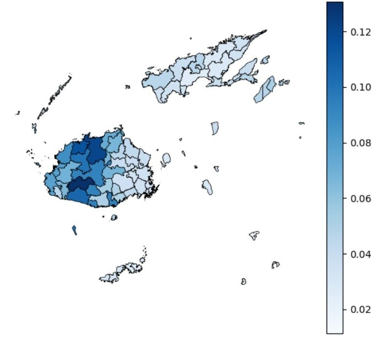
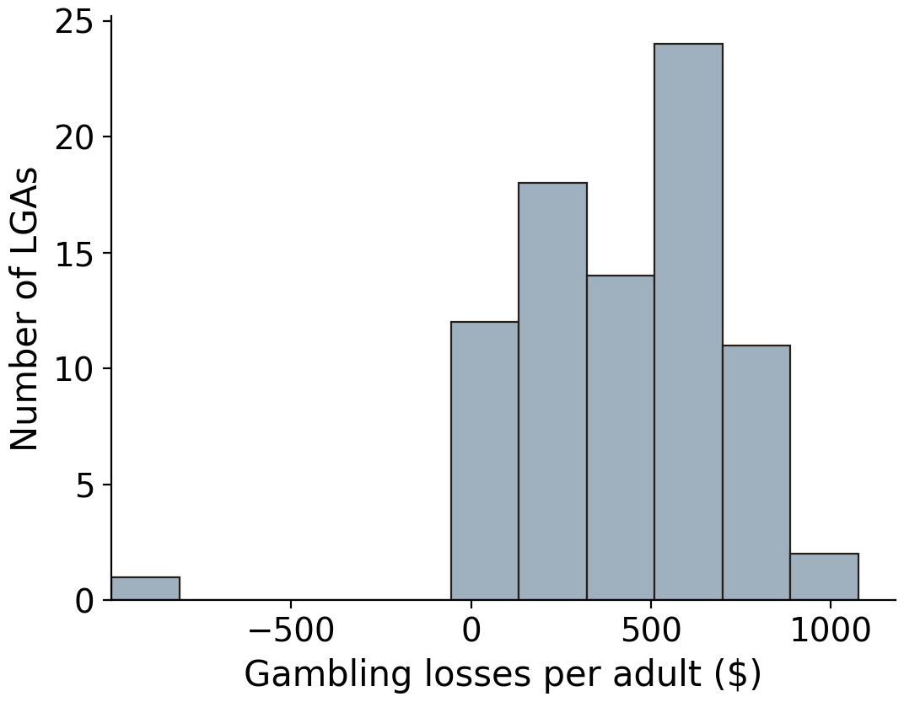
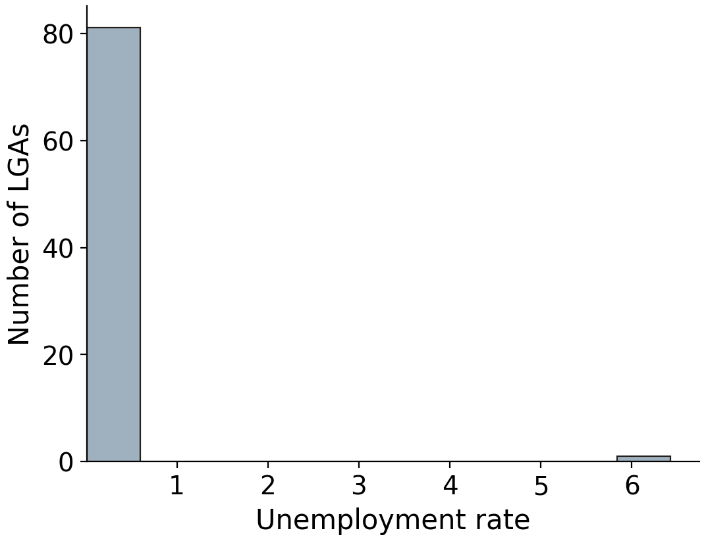
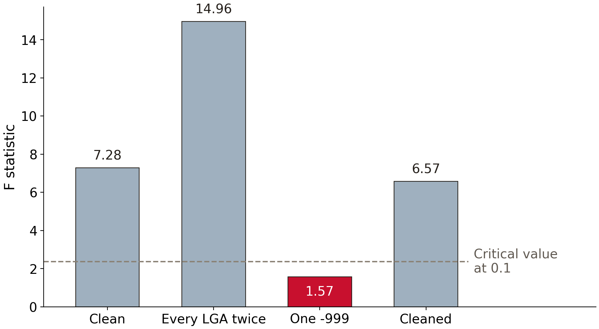

1 What is econometrics?
2 Basic mathematical tools
3 Stats fundamentals
4 Stats fundamentals II
5 Simple regression
6 OLS properties & fit
7 Flavors of OLS & OVB Quiz
8 Causality
9 Regression inference
10 Inference, continued PS due 16 Oct
11 Diagnostics
12 Measurement error & IRL
13 Revision
Fiji, 1979 to 2022
Insurance that pays out when a cyclone hits
We wanted our sample to include the places cyclones hit hardest
So we needed a map: 1 row per tikina, with its average payout share
| Country | Fiji | Fiji | Fiji | Fiji |
|---|---|---|---|---|
| Division | Western | Western | Western | Western |
| Province | Ba | Ba | Ba | Nadroga-Navosa |
| Tikina | Nadi | Vuda | Nawaka | Cuvu |
| Beneficiaries | 18,240 | 9,615 | 3,870 | 6,105 |
| 1979 | 0.00 | 0.00 | 0.00 | 0.00 |
| 1980 | 0.05 | 0.00 | 0.08 | 0.00 |
| 1981 | 0.00 | 0.00 | 0.00 | 0.00 |
| 1982 | 0.00 | 0.00 | 0.00 | 0.12 |
| 1983 | 0.42 | 0.38 | 0.35 | 0.21 |
| 1984 | 0.00 | 0.00 | 0.00 | 0.00 |
| ⋮ | ⋮ | ⋮ | ⋮ | ⋮ |
Layout of the government spreadsheet; the data are confidential
Move the label rows into columns
Match tikina names to the map
Average across years
Make the map

1 row per observation, 1 column per variable
Python's ols expects this shape
The Fiji sheet had its labels in rows and its tikinas in columns
Missing values coded as -999
Duplicated rows
Mixed units, such as percent and shares
Typos
Crop yield = harvest / field size
Farmers round field sizes: 0.25, 0.5, or 1 acre
More in the week 12 Essential Concepts recordings
messy = pd.read_csv(f"{DATA}/pokies-victoria-2024-messy.csv")
messy[["exp_per_adult", "egm_per_1000", "ue_rate",
"SEIFA_dis_score"]].describe().round(2) exp_per_adult egm_per_1000 ue_rate SEIFA_dis_score
count 82.00 82.00 82.00 82.00
mean 414.90 4.67 0.11 1000.51
std 309.23 2.68 0.71 46.19
min -999.00 0.00 0.01 886.66
25% 236.13 3.09 0.03 965.76
50% 432.24 4.66 0.03 1000.16
75% 620.74 6.63 0.04 1035.51
max 1075.97 10.40 6.42 1092.87Data: VGCCC 2024, 79 Victorian LGAs, with problems that we planted


Data: VGCCC 2024, 79 Victorian LGAs, with problems that we planted
Unrestricted: exp_per_adult ~ egm_per_1000 + high_ue + SEIFA_dis_score
Restricted: exp_per_adult ~ egm_per_1000
H_0: \beta_2 = \beta_3 = 0
If the null is true, dropping them should barely hurt the fit
Sum of squared residuals (SSR): what each model leaves unexplained
Restricted SSR: 2,208,120
Unrestricted SSR: 1,848,963
Difference: 359,157
Is 359,157 a lot?
Loss of fit per restriction: 359,157 / 2 = 179,579
Noise per degree of freedom: 1,848,963 / 75 = 24,653
F = 179,579 / 24,653 = 7.28
F = \frac{(SSR_r - SSR_{ur})/Q}{SSR_{ur}/(n-k-1)}
median_val = pokies["ue_rate"].median()
pokies["high_ue"] = (pokies["ue_rate"] > median_val).astype(int)
model = ols("exp_per_adult ~ egm_per_1000 + high_ue + SEIFA_dis_score",
data=pokies).fit()
model.f_test("high_ue = 0, SEIFA_dis_score = 0")<F test: F=7.284290812093372, p=0.0012851645634963454, df_denom=75, df_num=2>Data: VGCCC 2024, 79 Victorian LGAs
<F test: F=14.95707713416505, p=1.1580534825703107e-06, df_denom=154, df_num=2>Same coefficients, smaller standard errors
high_ue standard error: 25.91, against 37.12
messy = messy.drop_duplicates()
messy.loc[messy["ue_rate"] > 1, "ue_rate"] = messy["ue_rate"] / 100
# then high_ue, the same model, and f_test<F test: F=1.5654350799342398, p=0.21574839992285985, df_denom=75, df_num=2>high_ue coefficient: 84.77, against 130.29
<F test: F=6.566531396601032, p=0.002370300275475509, df_denom=74, df_num=2>ols drops Whittlesea, so n = 78

Data: VGCCC 2024, 79 Victorian LGAs, with problems that we planted
describe(): impossible mins and maxes, and the count
histplot(): values far from the rest
duplicated(): rows that appear twice
Essential Concepts: robust standard errors
Problem set due Friday 16 October
Optional: DIME Analytics Data Handbook, chapter 5